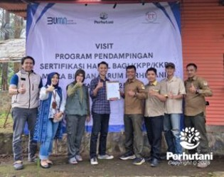

TASIKMALAYA, PERHUTANI (07/01/2026) | Perum Perhutani Kesatuan Pemangkuan Hutan (KPH) Tasikmalaya bersama CV Emir Tusin melaksanakan pendampingan pembuatan legalitas usaha bagi Lembaga Masyarakat Desa Hutan (LMDH) Kahirupan, Desa Sukahening, Kecamatan Cisayong. Kegiatan tersebut dilaksanakan pada Selasa (06/01) di lokasi wisata Curug Hanoman, Resort Pemangkuan Hutan (RPH) Cisayong, Bagian Kesatuan Pemangkuan Hutan (BKPH) Tasikmalaya.
Pendampingan meliputi pembuatan Nomor Induk Berusaha (NIB) dan sertifikasi halal produk sebagai bagian dari program Tanggung Jawab Sosial dan Lingkungan Perhutani dalam mendukung pengembangan usaha produktif masyarakat desa hutan, khususnya budidaya tanaman kopi.
Kegiatan ini dihadiri Administratur/KKPH Tasikmalaya yang diwakili Asper/KBKPH Tasikmalaya Ryan Metika Prasetyo, perwakilan Divisi Regional Jawa Barat dan Banten Yulianingsih, Direktur CV Emir Tusin sekaligus Konsultan TJSL Perhutani Anita, serta Ketua LMDH Kahirupan Agus.
Asper/KBKPH Tasikmalaya Ryan Metika Prasetyo menyampaikan bahwa Perhutani berkomitmen mendorong peningkatan kesejahteraan masyarakat sekitar hutan melalui kemitraan produktif yang berkelanjutan. Saat ini, LMDH Kahirupan mengelola sekitar 10 hektare lahan kopi melalui skema Kerja Sama Kemitraan Produktif sebagai upaya peningkatan ekonomi masyarakat desa hutan.
Sementara itu, Direktur CV Emir Tusin Anita menegaskan bahwa penguatan legalitas usaha merupakan fondasi penting agar produk memiliki identitas yang jelas, meningkatkan kepercayaan konsumen, serta membuka peluang pasar yang lebih luas. Ia juga mendorong LMDH untuk menyusun perencanaan pengembangan usaha secara bertahap dan memanfaatkan media sosial sebagai strategi pemasaran.
Perwakilan penggarap kopi LMDH Kahirupan, Iman, mengapresiasi pendampingan yang diberikan dan berharap komoditas kopi dapat menjadi produk unggulan Desa Sukahening yang mampu meningkatkan kesejahteraan masyarakat sekitar hutan.
Melalui pendampingan ini, Perhutani KPH Tasikmalaya menegaskan komitmennya dalam mendorong kemandirian ekonomi masyarakat desa hutan melalui kemitraan produktif yang berkelanjutan serta pengelolaan hutan yang lestari dan bernilai tambah.
Editor: WK
Copyright © 2026 Warta Nusantara Barat